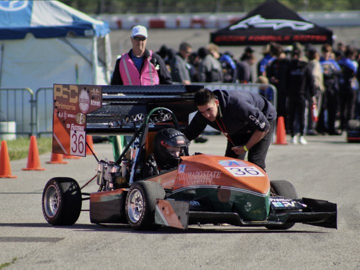

Combustion car, full harness integration & wireless telemetry
On the combustion car, our two-person electrical team delivered the full vehicle harness and a wireless telemetry unit, the foundation that later grew into sensor fusion and autonomous work.
On the combustion car, our two-person electrical team delivered the full vehicle harness and a wireless telemetry unit, the foundation that later grew into sensor fusion and autonomous work.